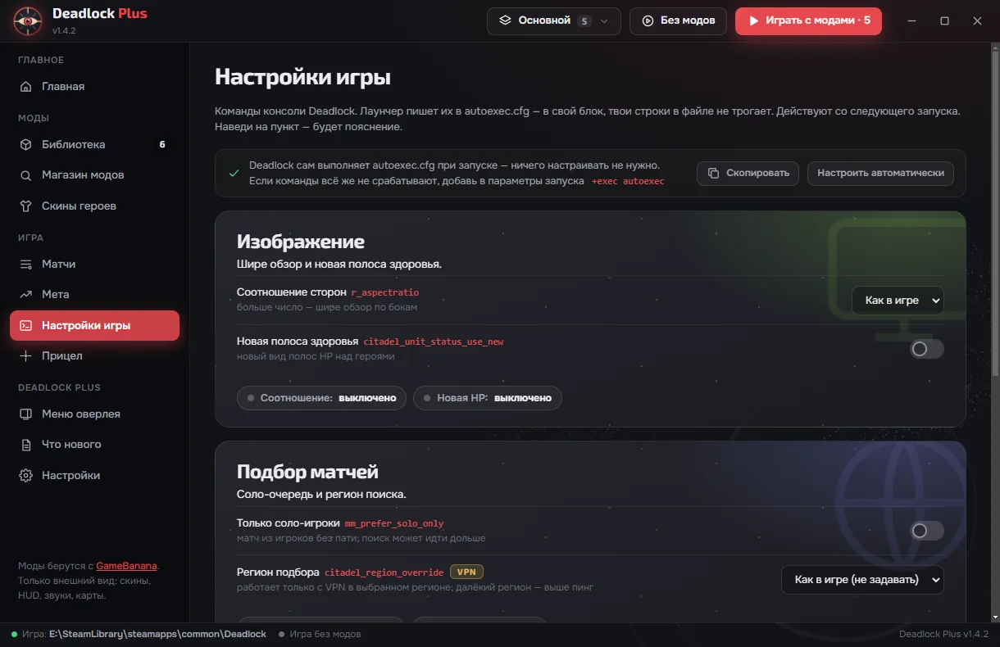
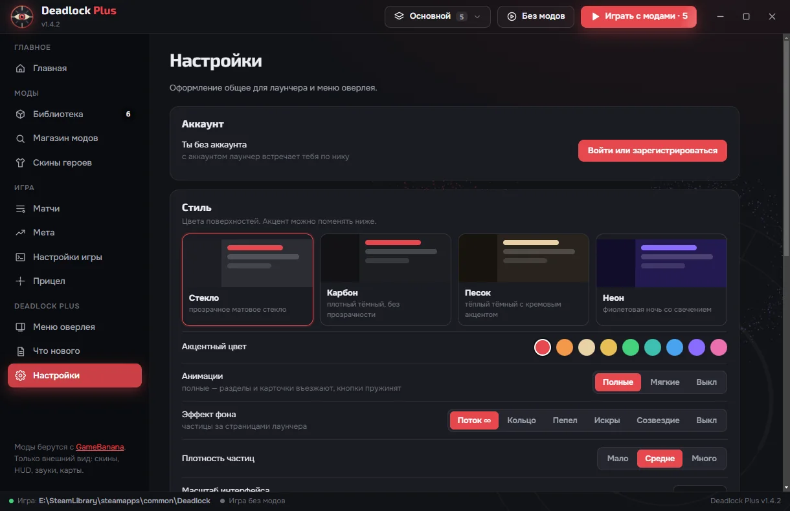

Оверлей в игре
Что и когда покупать по статистике твоего ранга, как качать способности, линия или лес, с кем стоять и сколько душ должно быть к этой минуте.
души · билды · прокачка
Подсказывает что и когда покупать прямо в матче, ставит моды в один клик и отвечает на вопросы голосом. Бесплатно, для Windows 10 и 11 — и ни байта в процесс игры.
Работает поверх игры в режиме «Без рамки». Открывается клавишей Insert или кликом по значку в углу экрана.
Что и когда покупать по статистике твоего ранга, как качать способности, линия или лес, с кем стоять и сколько душ должно быть к этой минуте.
Claude разбирает пики, шансы и закупку. Спроси текстом или голосом прямо в матче — ответ появится над способностями.
Каталог GameBanana внутри лаунчера: скины, HUD, звуки. Включай, меняй порядок, играй с модами или без.
Соотношение сторон, соло-подбор, новая полоса здоровья, регион и свои команды — без ручной правки autoexec.
Шанс на победу по драфту, матчапы, топ игроков и патчи — кого усилили и на ком сейчас играть.
Четыре темы, акцентный цвет, анимации и живой фон из частиц. Масштаб сам подстраивается под 4K.



Ничего не внедряет в процесс Deadlock и не читает его память. Данные матчей — из публичного deadlock-api.
Скины, HUD и звуки видишь только ты. Моды, меняющие геймплей, в каталоге скрыты.
Ключ Claude API и вход в аккаунт хранятся на твоём компьютере в зашифрованном виде.
Установщик ставит ярлыки на рабочий стол и в «Пуск». Переносная версия — один файл без установки.